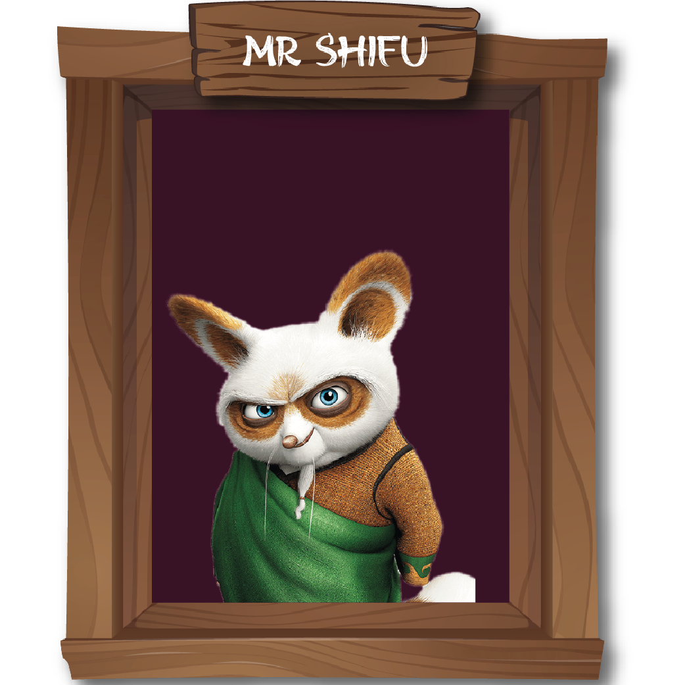
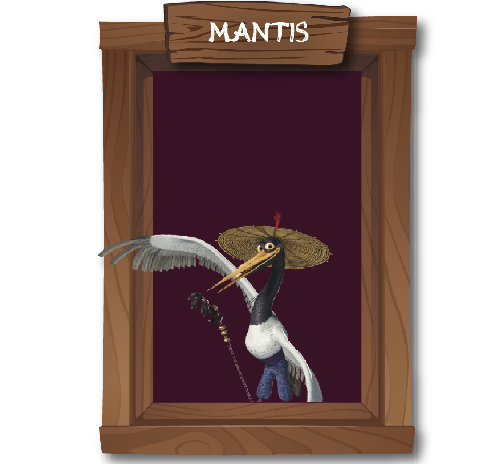
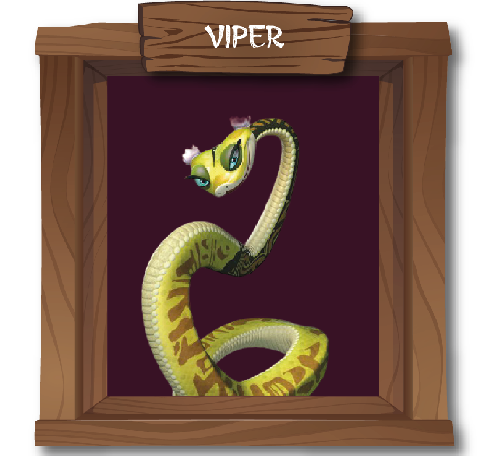

"Po, mijn leerling, ik heb je zien veranderen van een onwaarschijnlijke held tot een ware Kung Fu meester. Je leerde niet alleen de technieken van Kung Fu, maar ook de diepere wijsheid en toewijding die nodig zijn om een echt meester te worden. Je reis is een voorbeeld voor allen die de roep van het avontuur volgen."

"Herinner je je die dagen, Po, waarop je nauwelijks overeind kon blijven? Je hebt de valkuilen van onzekerheid overwonnen en getransformeerd in een onwrikbare krijger. Je vastberadenheid heeft ons allen geïnspireerd, en je bent nu een toonbeeld van kracht en vasthoudendheid."
"Kleine Po, je hebt laten zien dat grootte niets zegt over kracht. Je bent uitgegroeid van een sprankje vastberadenheid tot een onverschrokken krijger. Ik herinner me hoe je de uitdagingen van het leven hebt aangepakt en hebt laten zien dat ware moed van binnenuit komt. Je bent nu sterker dan ooit tevoren."
"Po, vanaf het begin was je altijd de bron van vreugde. Maar door de jaren heen zag ik je evolueren tot een bron van inspiratie. Je leerde ons dat ware kracht niet alleen fysiek is, maar ook in de kracht van vriendschap en positiviteit. Je bent gegroeid, mijn vriend, tot een stralende zon in onze levens."
"Po, je hebt ons laten zien dat kwetsbaarheid een kracht kan zijn. Net zoals een slang zijn oude huid afwerpt, heb jij je beperkingen afgeworpen en bent gegroeid in ongelooflijke kracht. Je bent nu een toonbeeld van zelfacceptatie en moed geworden."
"Po, vanaf het moment dat je op het toneel verscheen, wist ik dat je anders was. Je evolutie van een onhandige dromer tot een gracieuze krijger is bewonderenswaardig. Je hebt de lucht doorkliefd, net als een kraanvogel in volle vlucht. Jouw reis is een testament van doorzettingsvermogen en groei."